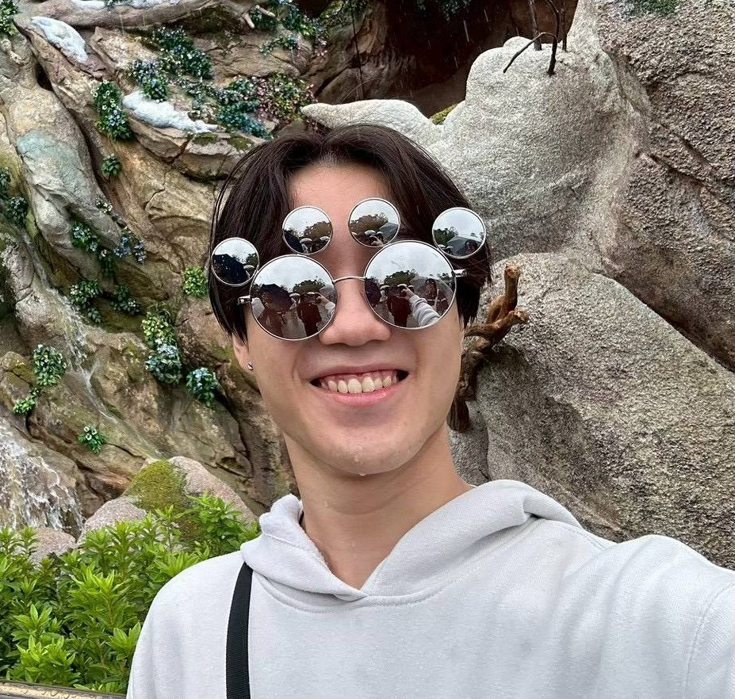
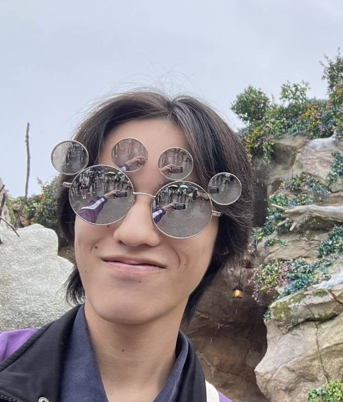
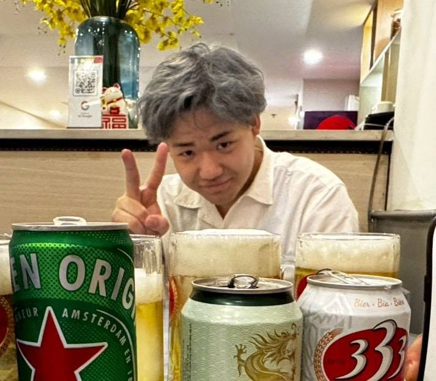
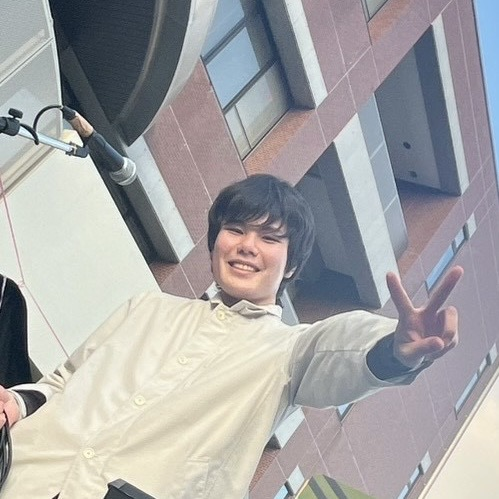

スタッフ紹介

的羽 直純
所属：専攻科 電気電子システム（本科：電気情報）
技術提供：オブジェクト指向、ゲーム開発、デスクトップアプリ、数値計算、シェーダ言語
担当曜日：月曜日・火曜日
「身体は創造を求める」
GitHub: tomatomato2048
Instagram: tomatomato2048

野口 史遠
所属：専攻科 電気電子システム（本科：電子制御）
技術提供：回路、組み込みシステム、ROS2
担当曜日：水曜日
「最高のソリューションを提供します」

辻 隼斗
所属：専攻科 電気電子システム（本科：電気情報）
技術提供：AI・ディープラーニング 画像解析
担当曜日：木曜日・金曜日
「NO MONOTSUKURI NO LIFE」

中本 莞二郎
所属：専攻科 建設工学コース（本科：建設システム）
技術提供：AutoCAD、ArchiCAD
「睡眠は三文の徳」

平中 太朗
所属：専攻科 建設工学コース（本科：建設システム）
技術提供：ArchiCAD、AutoCAD、Twinmotion
研究室では建物の改修の研究
「気軽に利用してください🙌」

平木 彪雅
所属：専攻科 建設工学コース（本科：建設システム）
技術提供：建築構造、意匠
使用建築ソフト：ArchiCAD、AutoCAD、Twinmotion
「気軽に質問してください」

池田 翔太郎
所属：専攻科 電気電子システム（本科：電気情報）
技術提供：画像認識, 音響制作, データベース運用, iPaaS / 自動化
担当曜日：火曜日
「日常の不便を、最高の作品に」